Published: 2023-09-22
Original link: https://www.cnphotos.net/academy/show-151.html
■ Interviewed | Li Tieqiang
■ Reporter | Zhang Yue
■ Editor | Zhou Yimeng
■ Editor-in-chief | Chen Xiaojun
The CNPhotos Top-Ten Photographers award selects the best photography of each year. It encourages and honors excellent photographers who have made outstanding achievements in artistic photography. It drives photographers to create more work that reflects the voice of the new era, shows the struggle of the people, lifts the national spirit, and shapes noble feeling.
For the 5th CNPhotos Top-Ten Photographers award of 2022, 191 portfolios by 173 authors were published on the CNPhotos public platform or submitted directly. After the authors confirmed their entry, the works were ranked by read count, likes, and valid comments, from high to low. Together with a review of the work's depth, artistry, value guidance, spiritual lead, and aesthetic insight, 64 photographers were shortlisted for the 2022 CNPhotos Top-Ten.
After a selected-works display, a public vote, a final review by a committee of famous photographers, experts, and scholars, and a public notice period, the year's CNPhotos Top-Ten Photographers and nominees were confirmed.
To further explore and show the classic work and creative journey of photographers, and to build a wider space for display and exchange, CNPhotos will soon send reporters and editors to interview the top-ten photographers. These interviews tell the stories behind the work. An album of the CNPhotos Top-Ten Photographers will be published later.
This issue features: an interview with Li Tieqiang, the photographer who contests with kung fu.
— Editor's note
Foreword
Li Tieqiang was born in Renqiu, Cangzhou, Hebei, a national home of martial arts. He got his first digital camera in 2005. He chose photography firmly and soon made his mark. In only 18 years he has won many honors, and he has studied deeply, especially in the visual presentation of Shaolin and kung fu. He is also a curator, an entrepreneur, a people's congress representative, a moral model, and a philanthropist. A broad view has built a rich life record, and his long focus on Shaolin kung fu has settled into a solid and deep body of thought.
The lines above are some of the labels on him. We usually use them to understand a person quickly. This led me to a thought. When we say Van Gogh, we think of Impressionism, loneliness, and madness. But the real Van Gogh grows vague behind those clear words. You could say the label 'Van Gogh' killed the real Van Gogh. In this world of appearances, Husserl offered a stirring call: back to the things themselves. So what kind of person is Li Tieqiang? This interview is his own thinking and words on photography, life, and work. Through these processes and details, we restore a three-dimensional Li Tieqiang as a photographer.
He stresses again and again that he keeps breaking through and creating. So he keeps making new labels. Li Tieqiang is always a work in progress, because through his photos and his plain, honest words, you can feel his all-in devotion to photography and his tireless pursuit.
Zhang Yue
September 22, 2023
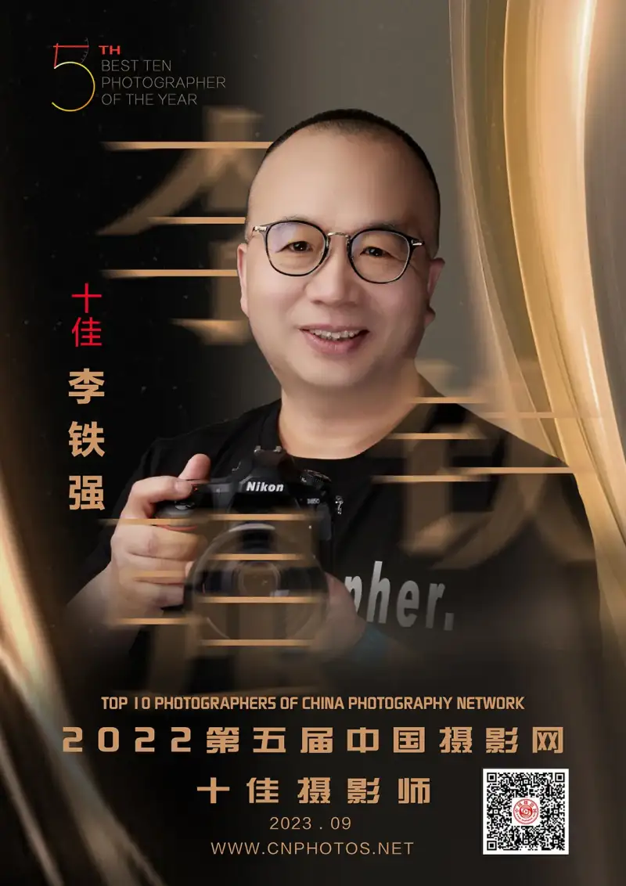
Li Tieqiang was born in Renqiu, Hebei, in December 1971. He is a freelance photographer, an independent curator, a humanistic documentary photographer, and a signed photographer for CNPhotos. In 2023 he won the 14th China Photography Golden Statue Award.
He has liked photography since middle school. He went from curiosity to passion, and poured almost all his energy outside study and work into photography. He sought out senior photographers to learn from, kept reading books on photography, and studied the art of photography. He has worked in more than 20 provinces and regions across China, and has gone abroad to try different subjects and styles. His footprints reach nearly a hundred countries and regions on five continents.
He has published the collections The Place Tanned by the Sun, Strangers on the Land, The World As It Is, Childhood, What I Saw in Korea, Shaolin Monks, and The Yi Come and Go, among others.
He appeared on Beijing TV's Light and Shadow New World and its website to tell the ideas and stories behind China Kung Fu. His series China Kung Fu was chosen by People's Education Press. One image became a textbook cover, three images were used inside, and the work was collected for good by the China Photographers Association.
His series Not a Catwalk, Yet More Than a Catwalk won the Bronze Collection Award at the 25th National Photography Art Exhibition. His group China Kung Fu was shown at the 28th National Photography Art Exhibition. His series China Kung Fu won the Gold Collection Award at the 25th Hebei Photography Art Exhibition, and was collected for good by the Hebei Archives, the Artron Art Museum, and the training center of the China Photographers Association.
Zhang Yue (CNPhotos reporter, ZY): What was the path of your photography?
Li Tieqiang (CNPhotos top-ten photographer, LTQ):In middle school I grew to love photography. From that moment I felt that if I ever became well off, I must have a camera of my own. But I really started taking photos in 2005, when the digital age had begun. At first I liked landscape photography. I shot many scenes at home and abroad. The more I shot, the more I felt landscape work was hard to go beyond myself, and hard to express my own ideas. Then I thought of shooting human life. I shot a lot of markets and factories. Later, by chance, I began a new subject: kung fu.
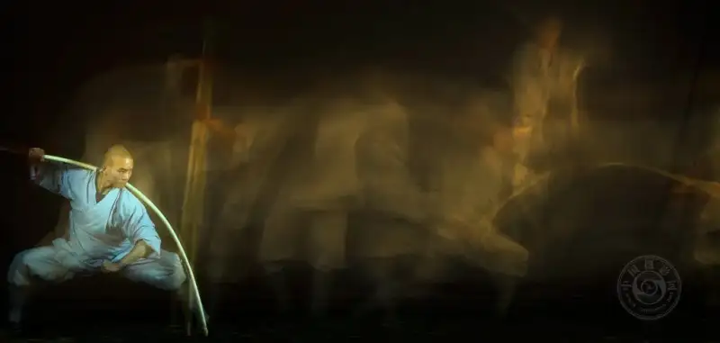
Wind-Fire Staff
April 22, 2022
Songshan Shaolin Temple
Martial monk Yan Xiangyu practices the wind-fire staff
ZY: You won this year's CNPhotos top-ten title with your Shaolin kung fu series. Please briefly introduce the background and creative idea of this series.
LTQ:After I fell for photography, I took some wrong turns before I found my main direction. Again by chance, once when I went to Lop Nur in Xinjiang to shoot models, I met a few martial monks visiting from Shaolin. My birthplace, Renqiu in Cangzhou, Hebei, is a home of martial arts. I trained with my father's generation since childhood, and every move I learned is still carved in my memory. Then I had a sudden idea: I wanted to express kung fu. After I became friends with these monks in Xinjiang and at Shaolin, I went to Shaolin to try a shoot. It felt good. At first they were quite resistant, but as I did some good deeds for the temple and won acceptance from everyone, from the abbot down to the monks, the later shoots went smoothly.
Then I made a firm resolve: I would dig into the Shaolin subject and shoot kung fu well. Easy to say, hard to do. Some well-known Chinese photographers, including Wang Yao, the former chair of the China Photographers Association, and Hei Ming, have already presented Shaolin culture with success. There are many foreign photographers too, such as the Polish photographer Tomasz Gudzowaty. All this brought me a lot of pressure. At the time, Abbot Yongxin did not especially believe in me. He said, all right, try it and see.
After I made up my mind, I took time and space as my main creative direction. I first shot Shaolin in 2017, and spent about 20-plus days on a great deal of interviewing. In the daytime I mainly interviewed the monks. Each monk is like a living fossil, representing the heavy 1500-year history of Shaolin culture. I learned a lot from their words and ways. At night I sat alone in the Shaolin library reading many books to understand Shaolin culture more deeply. With this base, I began to think about how to express it in images. To pursue innovation, I used many methods to shoot the ink-wash kung fu, zen-feeling kung fu, imagery, and real kung fu series, including the zen-and-martial kung fu series, which so far feels the most complete and extreme to me. I selected images from these series and entered the 14th Golden Statue award, and was lucky to win. I have higher demands on myself. Awards are in the past. I must keep creating.
My creative idea is mainly to show the dreamy, misty beauty of kung fu to the viewer. When I shoot, I record in color, but in the end I present the best part in black, white, and gray. For lighting I mainly use Broncolor lights. Beyond its beauty, Shaolin kung fu has a rhythm. The rhythm of beauty is in the balance of hard and soft. It looks soft, but there is strength within the softness, and softness within the strength. To express this beauty, and the essence and meaning of Shaolin kung fu, I work during the shoot, action by action. Depending on where the force lands, I look for the place where a limb is most right, most beautiful, most moving, and I may light just that part. The rest stays mainly in black and gray tones.
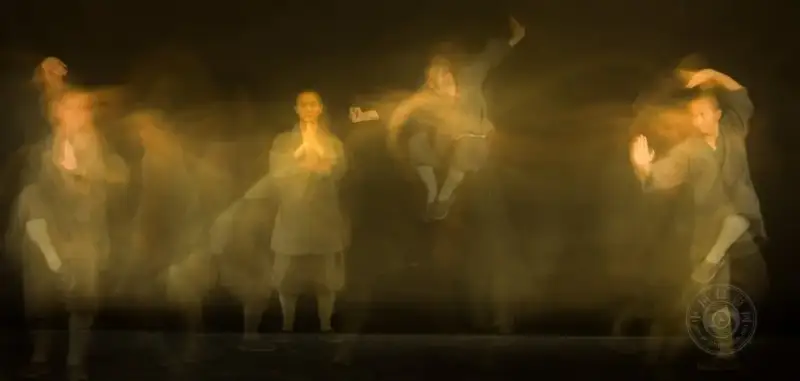
No Self
April 27, 2022
Shuiyu Temple, a lower temple of Shaolin
Shaolin kung fu master Shi Yanqin practices Shaolin boxing
ZY: You just said you must keep innovating. Do you have any new ideas now for Shaolin and kung fu?
LTQ:I am soon going to make a series called The Rhythm of Bu. Bu is a character stacked as gong on top of fu, so the rhythm of bu is the rhythm of kung fu. The inspiration also comes from Shaolin culture, which is part of our Chinese traditional culture. Shaolin culture has two values in today's society. One is its value for fitness and health. Shaolin kung fu has settled over 1500 years, dropping the coarse and keeping the fine. What has come down to us, such as Baduanjin, the Yijin Jing, tui na, and acupoint pressing, is the preserved essence. Many Shaolin monks go abroad after their training and work in fitness and health, and it is often hard to book them. In rich Western countries especially, they seem to take only three or four bookings a day to teach these, and the fee is high. But I feel it is hard to express fitness and health in images, because the cultural background at home and abroad differs greatly, and views on health are not the same, so it is hard to express. Then I thought of the aesthetic value of Shaolin kung fu today. Shaolin kung fu is also the essence of the ancient aesthetics of the human body in motion. So I began to think about how to express the beauty of kung fu, and I first named it The Rhythm of Bu. Rhythm is the peak of beauty, the highest ideal of artistic beauty.
ZY: You have spent much time on many Buddhist series. Do you have a special bond with Buddhism?
LTQ:A dream of kung fu was planted in me as a child. As an adult, by chance, I formed a bond with Songshan Shaolin Temple. Also, to record Shaolin culture and kung fu in images is itself a kind of practice. As I visited the temple more often, Buddhist and Chan culture quietly shaped my words and ways, and gave me reverence and caution in daily life. In fact, when I stayed there for a month or two, I shaved my head. Later I formally took refuge, and my dharma name is Shi Yanbo.
ZY: What is your creative habit? Do you finish one series before the next, or work on several subjects at once?
LTQ:Before each creative trip to Songshan Shaolin, I make a plan. I mostly work on several subjects at once, because finishing one before the next wastes too much time. Even in the earlier years before I shot systematically, I worked on several subjects together. I have shot acrobatics too, but I might shoot acrobatics today and a market tomorrow. Now at the temple I mainly shoot kung fu, but I also shoot the daily life of the monks, temple repairs, cultural exchange, zen medicine, sitting meditation, and Buddhist ceremonies, because many things and events happen at Shaolin in a day. I record them all, then select and file the images myself.
ZY: How long does a series usually take you? What is the shortest, and the longest?
LTQ:The shortest is probably the book Charm Talk, which I shot in only three or four sessions.
The longest is kung fu. From 2017 to today I have been to Shaolin more than 40 times. Because I make a folder for each shoot, there are 39 folders, so the actual shoots number 39, and the 40-plus trips include research, interviewing, and shooting. This is the longest, and it is not finished. I still have to shoot for another 20 years.
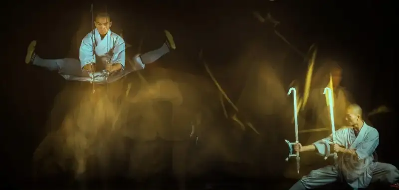
Heart and Instrument
April 22, 2022
Songshan Shaolin Temple
Martial monk Yan Xiangyu practices Shaolin blade and halberd
ZY: How much money does a series usually cost you? Does photography pay you back? Many people want to know.
LTQ:Just for the shooting at Songshan Shaolin, it has been seven years and more than 40 visits. I have not counted the money I put in, but it is a large sum. To carry and promote Shaolin culture in images is, in a hidden way, my duty and mission. I give without asking for a return.
ZY: Your series China Kung Fu was chosen by People's Education Press for a textbook, with one image on the cover and three inside, and it was collected by the China Photographers Association. Why was it chosen? What do you think of this?
LTQ:It seems to be 2018. They saw online that I had shown work at the Pingyao Photography Festival. After a long search, they reached the head of our Hebei Photographers Association, and then called me. Their picture editor said they had chosen many kung fu photos and were not satisfied, and they wanted my few.
Because I have lived with the monks for a long time, my study of Shaolin culture and kung fu has grown deeper, and I keep innovating in carrying the Shaolin cultural phenomenon in images. I really worked hard on observation, structure, and detail, so People's Education Press chose my work for the cover and inside illustrations.
ZY: For example, your recent works such as Shaolin Monks, The Yi Come and Go, and Charm Talk. What are the different reasons and stories behind them at these stages?
LTQ:For the portraits in Shaolin Monks, I stripped away the temple setting and the details of daily life, and placed the person against a plain gray background. This removes the illusion of a three-dimensional space and makes it a flat two-dimensional image. The portrait becomes the visual center of the frame, and in the direct meeting of eyes we feel and explore the spiritual world that creates mystery. In the active search of vision, we raise care and questions for the person, and in the interaction with Buddhist experience we build the meaning of the image for us. So the sharply individual portraits of monks in my lens also become a visual symbol that carries Buddhist imagination. We know a good portrait is truly hard. A good portrait must express the person's character. During the shoot, through my exchange, communication, and guidance with the monk, I do my best to show the monk's most personal expression in a photo. To read the inner world of a monk and enter the depth of his soul is to enter the depth of the soul of Shaolin Temple in this era.
The Yi Come and Go mainly describes Yi markets in Daliangshan. My choice of the Yi market is not just a way of reflecting life, nor is it curiosity about a contrast with central-plains life. It comes from deep emotion. I grew up in the country and have a special, lasting feeling for markets. The busy scenes of markets in my childhood are still clear in my mind. A market always stirs a distant but warm memory. I have a deep familiarity and warmth for markets, even a Yi market a thousand miles away. So I can say I shot from the view of someone who knows the place. This feeling and view gave my work more ease, freedom, vividness, and truth.
The body narrative in Charm Talk shows the differences of regions and cultures. In Blue and White, a quiet courtyard, a stream and a bamboo raft, and a figure in blue-and-white dress move gracefully and blend with the setting, showing an elegant and gentle style that captures the spirit of Chinese traditional aesthetics. Some images use strong light and shadow, extending the blue-and-white theme in photographic language and showing a different kind of beauty that gives a new visual experience. Desert opens a western tale, at once rough and delicate, myth and reality, over a mysterious base. Sunset, a sea of sand, an old fort, camel shadows, and dance form a unique and fantastic western Chinese landscape. Poplar uses bold, strong images to show, in a balance of hard and soft, the lofty spirit of the poplar that does not die, does not fall, and does not rot. In images where the person merges with the poplar, the poplar spirit rises into a personified elevation. The trilogy Blue and White, Desert, and Poplar each wins in its own way and becomes a visual image of the diversity of ethnic cultures. Against the Nordic scenes of bright pastoral ease and urban romance between modern buildings, and the human-body images from Africa, they form a sharp contrast of different moods and cultural tastes. This coexistence and meeting of cultures reflects the reality of human society in a globalized setting.
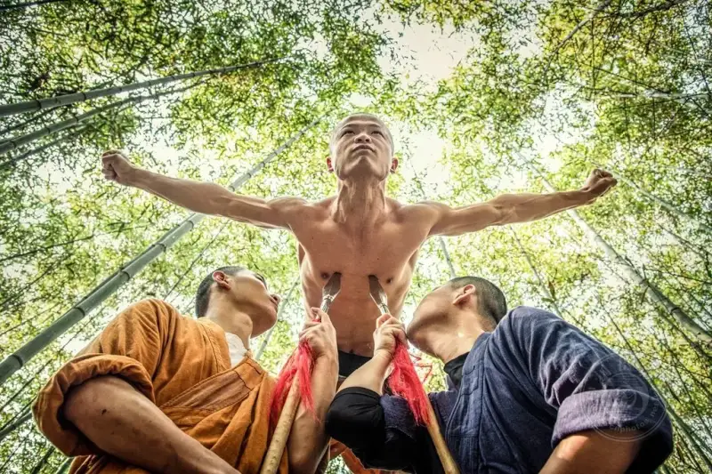
Invulnerable
November 6, 2020
Songshan Shaolin Temple
Martial monk Shi Yanshu practices invulnerable qigong deep in the bamboo sea
ZY: Will the Buddhist subject, or Shaolin Temple, remain a focus for you in the future? Why?
LTQ:The Shaolin subject really gets more exciting the more I create! To keep creating and innovating, I must study Shaolin culture. I cannot invent it out of thin air, so I read many books and materials. This exploration has brought me great surprises. For example, I shot zen-and-martial kung fu. So far, of everyone who has shot Shaolin, no one has shot zen-and-martial kung fu, so this is a breakthrough. These innovations in turn drive me to keep understanding Shaolin culture deeply, and it forms a good cycle.
Besides, Shaolin kung fu is vast and deep, and I can never fully master it. So far there is still much that is unknown, because some of the language is hard to understand. Even when I talk with the martial monks, there is much that is deep and subtle, something you grasp but cannot put into words. Whether the force of the image matches what they imagine takes time to work out with the monks and win their approval. Sometimes I think it is fine, but they are not satisfied. They are not satisfied even by a hair's breadth, and say, No, Teacher Li, we must shoot again. Sometimes we spend a whole day or two on a single move. After so many visits, if a trip yields one or two good images, that is enough. I always hold this attitude.
To open a small mouth and dig a deep well is my guiding principle for photographic subjects. So in future I will keep studying Shaolin culture and recording it with my lens.
ZY: How is your work mainly shown? How would you most like it shown? Exhibitions? Publication? Or contests and the spread after awards?
LTQ:Now it spreads mainly through TV interviews, photo albums, publication in books and newspapers, and exhibitions. TV may be more direct.
ZY: You say the look and spirit of kung fu cannot be fully shown in one moment. Why did you still choose still images rather than video?
LTQ:However well motion images are shot, I think they mainly depend on the director, and on the training of the actors. And shooting video is still my weak point. Many ideas and insights cannot be expressed in video.
Still images carry more of the photographer's thinking, because a single frame can better express my own ideas. So many photographers at home and abroad are devoted to photography, and that is its charm. Photography is about 200 years old and still developing.
This year the abbot will visit several countries to share Shaolin culture. I told him I can only record still images. One mind cannot do two things at once. I will stay calm and take photos steadily.
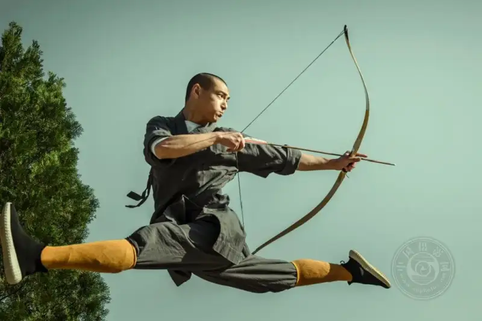
Zen Bow, Flying Shot
April 2, 2022
Songshan Shaolin Temple
Martial monk Shi Yanmeng practices zen-bow kung fu at the back mountain training ground
ZY: So how does your work express the look and spirit of kung fu? Can you talk about it in detail?
LTQ:Shooting kung fu is a gradual process. What people see in daily life is not the whole of kung fu. As I shot and grew familiar with the monks, they began to show some real kung fu. After a lot of communication, I shot the real kung fu series.
We know Songshan Shaolin is the original court of Chan. Training is also practice. The pursuit is not only technical; it is mainly a state of mind. Training must be solid. The basics, forms, and combat must be practiced step by step, in order, before they can change freely. The monks first train strictly by the principles of boxing, and finally reach the state where there is no fist, no intention, and within no intention lies the true meaning. This merges with the Chan state of no self, of seeing one's true nature, and the kung fu naturally becomes divine. The union of Chan and martial is the highest state of Shaolin kung fu. Chan is the soul, and the martial is its form. Chan trains the mind, and the martial trains the body. The union of Chan and martial is not only the essence of Shaolin martial art, but also a key trait that sets Shaolin kung fu apart.
So the look and spirit of kung fu matter, but they are hard to show fully in one moment. The beauty of kung fu lies in its process, where the real and the empty give rise to each other, hard and soft balance, fast and slow alternate, where you arrive before you strike, and in the flow of turn and transition. So I return to the move itself, and explore new ways for time to enter the image.
To catch that spirit, you need both the real and the empty. The real part is the moment that moves the viewer most, including emotion and action. The empty part is the supporting element in the frame, and it must be properly blurred. Both must take the most refined frame. It sounds simple, but it is not easy to put your own ideas into the frame and still move people. I shot about 3000 images and selected about 30. The monks, the editors of books and magazines, and curators all accept about 30 of them.
The especially blurred part demands better image quality and finer detail. Large format is not realistic, because I shoot motion and the chance of a successful image is too low. So I used a medium-format camera. The negative is large and the image quality is good, so the choice of equipment matters. I think that, on a suitable basis, if medium format works, do not use full frame; if large format works, do not use medium format. The harder it is to get the image, the more settled the person is, and the heavier the image.
Besides, I want to try the wet-plate and collodion processes. Wet plate involves chemistry, and the coating process becomes part of the work. In this process, humidity and temperature affect the result. I have seen many so-called failed works where, because the chemistry was not handled well, an extra mark on the frame actually made it more artistic. That is one of the charms of photography. Digital products bring convenience, but the classical processes still leave room for imagination. I once bought a Leica digital camera with no playback screen. You could not see what you shot right on the camera. It imitates the film age, and makes the photographer think and watch more, instead of always looking back at the work, and makes people value photography more. That is also a charm of photography.
For a while I was restless too. I went on group shoots. When I saw a scene and a model set a pose, I would squeeze into a corner and grab a few shots. More and more I feel that photography is not a cheerful thing to do in a crowd. It should be independent thinking and lonely creation. The choice of subject needs a unique thought, and then your own unique observation.
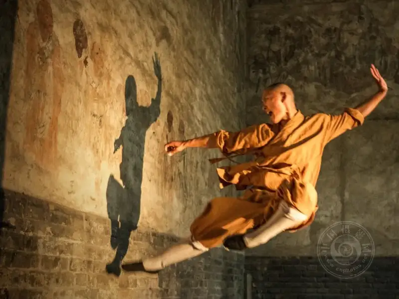
Running on Eaves and Walls
June 15, 2017
Songshan Shaolin Temple
Martial monk Shi Yanluo practices wall-walking light skill at the Hall of the Western Sage
ZY: You are also interested in the classical processes. What do you think of today's revival of the classical processes?
LTQ:Techniques and equipment never go out of date. The daguerreotype, dry plate, and wet plate are still used by some. That is a form of heritage. To use them is to carry them on. They are part of the world's traditional culture, and if they have lasted to today, there is a reason. You innovate and develop while you carry them on. The first photos after photography was invented were not necessarily of great quality, but the texture they showed is hard to reproduce today with our chemicals, because they were the chemicals of that time. The glass plates, the craft, and the materials also differ, so it is hard to reach nearly the same result. When no one in the world uses a technique, it is slowly lost, like today's intangible cultural heritage.
From the invention of photography to today, from hand coloring to Kodak color to digital cameras, many classic works of history are shown in black and white. That does not mean black-and-white images are necessarily better; the era decided it. At the time there were no color photos, so you used black and white. But black-and-white photos sometimes do express things well, with real force. They can show a person's emotion, light, and shadow well, and can move the viewer, so many people still shoot in black and white.
ZY: Do you have any special pursuit of equipment?
LTQ:At first I was impulsive and bought a lot, and I pursued image quality hard. I used to carry at least two lenses, a 24-70mm and a 70-200mm. Later I thought about the load. Now I use one lens, sometimes a zoom, sometimes a prime.
Now I think more about putting settled ideas into the frame. For example, the D-Day landing that Capa shot on film was out of focus, but in people's minds it shows the moment of the landing and moves the viewer. Its image quality is then less important. So photography is also an art of imperfect seeing. There is no perfect work, including the classics by masters that we study now. You cannot say every one is perfect.
To be perfect would be to paint on a blank sheet. You paint the element you want, and if you do not want it, you take a fresh sheet and paint again. Photography is not like that. Photography takes one frame from many scenes of life. That frame can be an order of the elements you want, but the things you do not want are in it too. Documentary especially requires that you not change the pixels at will. That is the difference between photography and art. Photography itself is an art of imperfection.
But if conditions allow, I still try various equipment. The medium of the image differs, and the result really differs. Once you use it, you know which subject suits which equipment, and you can stay one step ahead. Sometimes if you choose the right equipment, in some ways you have already gone beyond others.
ZY: You are good at using mist, water, and moonlight to build mood, and your images often have a highly artistic effect that many photographers lack. Does this way of expressing have a special meaning?
LTQ:Shaolin is a Buddhist holy site, so its kung fu differs from that of other places. Kung fu is a practice at Shaolin, and words and ways in the temple are all a form of practice. I think Shaolin kung fu differs from other kung fu in society in two ways: a quiet, clear mood, and a plain, light rhythm. People know it mainly through the 1982 film Shaolin Temple, and in the age of short video, people open their phones and see much kung fu. But tourists who actually walk into Shaolin and watch the monks train daily are not many. So we must still express the mystery of kung fu.
I use mist, water, and moonlight to build the frame in order to bring out that quiet mood, to fill it with a plain, detached rhythm, and at the same time to show the mystery of Chan kung fu. For example, when the moon comes out, the night is very still. People are about to sleep, and I use such an image to show stillness. As for plainness, I use mist to cover what I do not want, to simplify the frame and give it a misty, mysterious feeling that leaves much room for imagination.
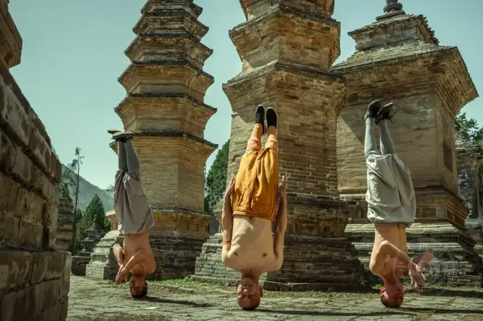
Headstand in the Pagoda Forest
April 2, 2022
Songshan Shaolin Temple
Martial monks practice headstand kung fu in the pagoda forest
ZY: You are good at planning ahead, such as writing scripts. Does this way lose some of the accidental artistic effects?
LTQ:A script and accidental art do not conflict. My script focuses on the kung fu move itself. Around one move, the monk and I communicate fully. The creation of one move usually takes a day, until both the monk and I are satisfied.
ZY: You know much about the history and theory of photography. How do you build this knowledge? Besides photography books, what else do you usually read?
LTQ:Outside photography, reading books and writing notes take much of my time. I learn what I do not know and practice what I cannot do, to keep raising my understanding. I also look at work on Facebook, and when I see strong work by foreign photographers, I interact with them.
ZY: Which theories, photographers, and works at home and abroad have influenced you most, and how? Can you give examples?
LTQ:Bresson's theory of the decisive moment at Magnum, and classic series such as The Boy, have influenced me a lot. The decisive moment is also much debated. Photography is not that old, and there is no exact definition of it. Much of it is still not standardized, and each person understands it differently, so it is normal that opposite views arise. With an opposite side, you can see the truth more clearly. The point of criticism is to push photography to develop for the better, though criticism may be biased, and a critic needs basic training.
My own understanding of the decisive moment is to watch in the light of my own experience, rebuild the elements, and, through the best instant, give things a new meaning and mood. This is one of the ideas I default to when I create.
ZY: What do you think matters most in humanistic documentary photography?
LTQ:Make your images guided by humanitarianism and human feeling.
ZY: As a humanistic documentary photographer, what do you require of the text?
LTQ:To create the Shaolin kung fu subject, I have read many books on Shaolin culture over the years. My ideas, thoughts, and inspiration all come from fine Chinese traditional culture, which is an endless treasure for my photography. So I strive to keep the captions rigorous and well grounded.
Also, the text must be concise. Because it is a photograph, if the text is too long, the photo becomes an illustration. If you write too much, you force the photographer's own view on the viewer and leave no room for imagination.
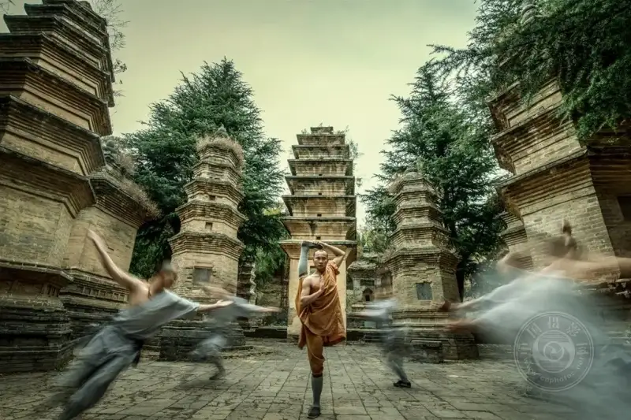
Kick to the Sky
November 4, 2018
Songshan Shaolin Temple
Martial monk Shi Yange practices the sky-kick in the pagoda forest
ZY: What do you see as the language, style, and traits of your work? How is it different from others?
LTQ:I feel I still lack a personal style. To innovate and break through in future work, and gradually form my own style, is my ultimate goal.
ZY: Who is your favorite Chinese photographer? And abroad?
LTQ:Zhu Xianmin, Wang Yuwen, Wang Wenlan, Hu Wugong, Xie Hailong, and Salgado are all photographers I like.
I especially like these senior photographers at home, because the years their photos record are exactly my childhood. By looking at their photos, I can recover my own path from birth to entering society. At that time the economy was poor, and I had no way to record my own growth. Their photos gave me a complete memory.
ZY: You see yourself as a humanistic documentary photographer. What do you think of staging and posing in the work?
LTQ:In recent years my work has been mainly humanistic documentary, such as the published books What I Saw in Korea, The Yi Come and Go, and Shaolin: Zen Seven. There is also work that stresses art, such as Charm Talk and Strangers on the Land. Catching within a set frame, and setting within a catch, is an artistic expression that comes from life and rises above life. Artistic truth can be accepted.
ZY: You have traveled and studied widely, across five continents. Do you always go with a subject, with a purpose and plan? Do you go abroad or at home as a team, or alone? You have been to so many countries. Is it all for photography? Have you ever been in danger?
LTQ:I basically go out only after I have done my homework. The difference is how thick or thin that homework is each time. I do not dare go alone. Usually a team of five or six goes together. The nearly hundred countries I mention include travel, and are not all for photography. In Papua New Guinea, I did not feel safe.
ZY: You have published The Place Tanned by the Sun, Strangers on the Land, The World As It Is, Childhood, What I Saw in Korea, and The Yi Come and Go. You have shot in several countries and among primitive tribes. In this process you must have had many wonderful encounters.
LTQ:There are too many funny stories. For example, on a trip to a primitive tribe in Indonesia, there was no water or electricity. We hired seven or eight people to carry grain, oil, rice, flour, tents, a generator, diesel, and camera bags, because in the forest we walked barefoot on mud and had to roll up our pants. There was a young couple who had just married. The husband said, Brother Li, please help. I see you are strong, so please carry my wife. Because I had lived in the country, I was fine, so I carried his wife while he lit the way with a flashlight. I thought, my goodness, he asks me to carry his wife.
I feel the medicine in primitive tribes is really backward. For example, when a child has a stomachache, they call a shaman to perform a ritual. I went there partly to see how our ancestors lived. Society is still developing. The earth is 4.6 billion years old. Is there a more civilized humanity? I feel there must be. Einstein said, I do not know what weapons World War III will use, but I know World War IV will be fought with stones and sticks. Buddhism says that when you see all forms as not-forms, you see the Tathagata. I look at the world with this way of thinking about arising and passing away.
Besides, North Koreans are quite mysterious to Chinese readers, and there are not many photo books about North Korea. So after What I Saw in Korea came out as a book, my friends and friends of friends called in crowds, and many asked for the book. In return, I mailed them the book, and I also received gifts from them, such as model machinery, model vehicles, drinks, calligraphy, and paintings.
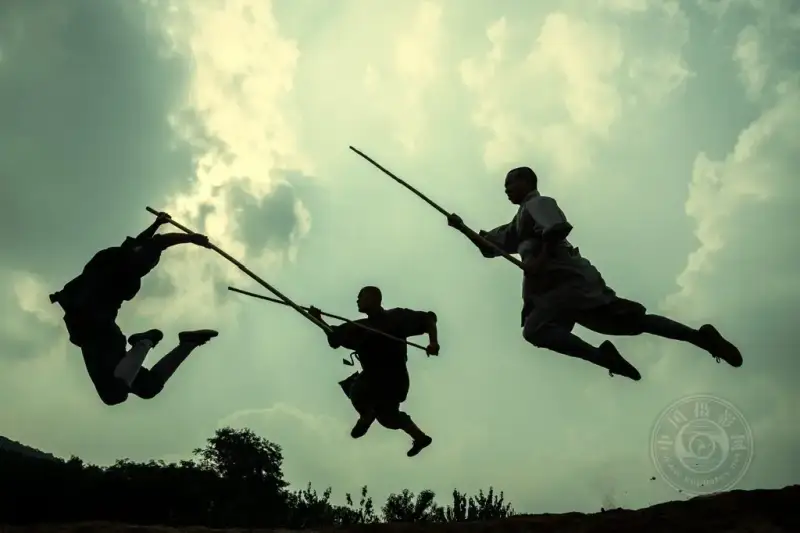
Weaving Staff
September 15, 2021
Songshan Shaolin Temple
Martial monks practice the Shaolin weaving staff
ZY: You are also the founder of the Li Tieqiang Photography Art Museum. Why did you build such a space? Can you tell us about it? How is it running now?
LTQ:To let photography go further and reach more people, I funded a photography art museum myself. It mainly includes a photography training hall, a high-standard studio, a book museum, exhibition halls, and a fitness hall.
ZY: In recent years you have curated and led many photography events. Which do you find most meaningful, and what role did they play? Can you talk about it?
LTQ:Exchange, study, and visits abroad are to find the gap and fix the weak points. Photography workshops aim to raise the overall level of the members. Exhibitions are an important way to meet photographic work, and to read, discuss, and improve within the setting of an exhibition.
ZY: There are many entrepreneur-photographers in China. In my memory you are not only a successful entrepreneur and a philanthropist, but also a key member of the Chinese Enterprise Photographers Association, and almost an activist for photography. So, is this outlet of photographic creation a way to express your values, or for some other reason?
LTQ:Everyone has a spiritual outlet. Music, roller skating, martial arts, and photography are all things I love in daily life. The final aim is to add colorful experiences to my life and leave some traces of living.
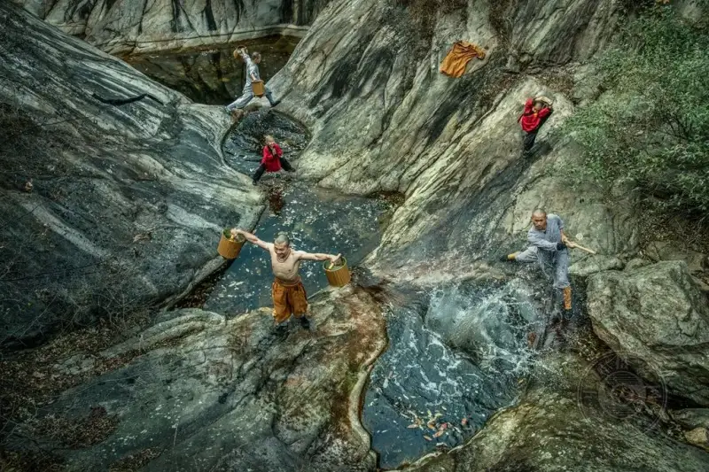
Training by the Mountain Stream
November 3, 2018
Songshan Shaolin Temple
Martial monks train deep in the mountain stream
ZY: Has your photography helped the rural revival or cultural development of any place?
LTQ:In my memory, I grew up in a fairly poor family. As a child I ate corn-flour cakes dipped in soy sauce, because I also had two older sisters and three older brothers, and I did not know what they ate. When I grew up and asked them, they said they ate sorghum cakes dipped in salt water. Sorghum cakes are hard to digest, but there was no choice, no food and no drink. In those years we almost went begging. Luckily we could get some food and drink at my grandmother's house, and we stayed at my uncle's. When I went to school, many teachers and neighbors helped me. Later, in business, without help from benefactors, it would have been very hard to fight it alone with no background. I feel I have been lucky. Because I needed money for business, neighbors and relatives lent it to me. So I made up my mind that, once I became well off, I would help everyone too.
Then, during the national power-grid renovation, I made money. Once I had money, I decided to help the poor and the weak. It is hard to do this alone, life is uncertain, and a person's years are limited. To make the work last longer and go further, I founded a charity called Yide Home of Love, the first registered charity in Renqiu. We often organize volunteers to visit outstanding Communist Party members, some childless elderly, and children out of school, and I have also helped some people through photography. But we act proactively: we help when we find people in need.
For photography, I now have two subjects I want to shoot: Hebei acrobatics, and the nearby Xiongan New Area. Xiongan is the nation's plan for a thousand years. If I shoot it, I must find the best entry point and do it well. In the years I have left, I want to contribute what I can to the revival and development of my home.
ZY: Thank you!
Zhang Yue
Reporter for CNPhotos.
Born in the 1990s, a Chinese woman based in Beijing.
Has published hundreds of thousands of words of arts criticism and political commentary.
Now studying for a master's degree in photography and digital media at the graduate school of the Chinese National Academy of Arts.
Has a special love for documentary photography.